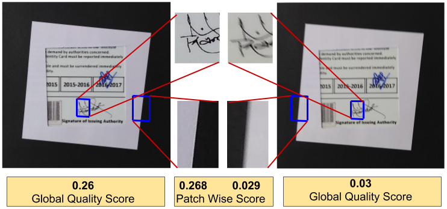
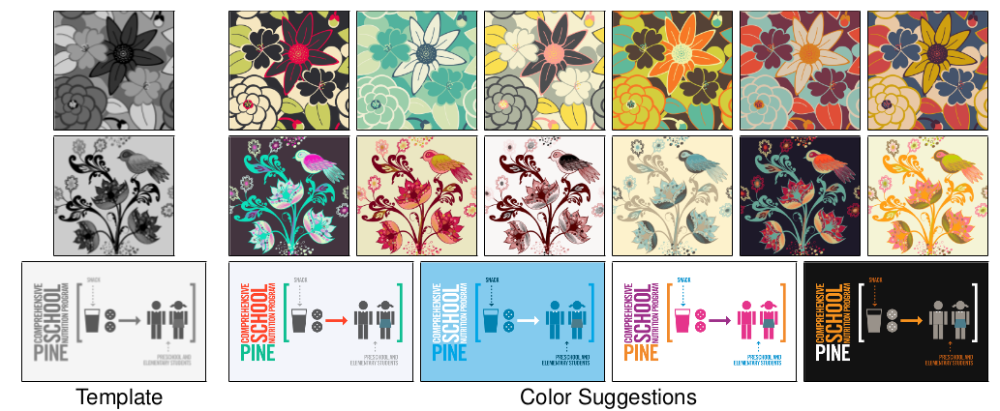

|
Murtuza Bohra
My work interests are Machine Learning, Computer Vision and Optimization. I enjoy the mathematical modeling of real life problem. I am currently working as Applied Scientist at Amazon.com. Before that I was pursuing MS by Research at IIIT Hyderabad. Before that, I completed my B.Tech in computer science from IIIT Vadodara.
Email /
Github /
Facebook
|
|
Updates
- May-2020: Joined Amazon.com as Applied Sceientist.
- April-2020: Paper accepted in Graphics Interface (GI'20).
- Feb-2020: Paper accepted in SIVP Journal.
- Sept-2019: Joined Microsoft Research Lab, India as Research Intern for 6 months.
- June-2018: Joined as part-time mentor for AIML program offered by IIIT-H and TalentSprint.
- July-2017: Joined MS by Research in Computer Science at IIIT, Hyderabad.
- June-2017: Graduated as B.Tech. in Computer Science and Engineering from IIIT, Vadodara.
- Jan-2017: Joined as cloud deployment engineer intern at Searce Inc. for 6 months.
- May-June,2016: Joined two-month internship at Tata Consultancy Services(TCS).
Publications
|

|
TextureToMTF: Predicting Spatial Frequency Response In The Wild [Link]
Having a good smartphone camera, doesn't always guarantee that the images captured with it, will of good quality.
|
|

|
ColorArt: Suggesting Colorizations of Graphic Arts Using Optimal Color-Graph Matching [Link]
Graphics designs are visually appealing only when they are colored appropriately. This is a fully automatic colorization algorithm for graphic patterns.
|
Positions of Responsibility
-
2017-2018: Member of Student Parliament of IIIT, Hyderabad.
-
2013-2015: Head of student's mess committee at IIIT, Vadodara.
|
|